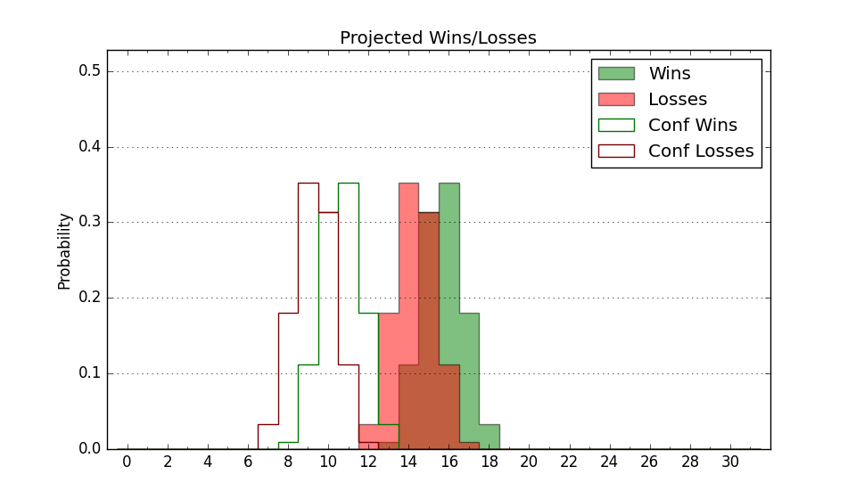

| Home | Game Probabilities | Conferences | Preseason Predictions | Odds Charts | NCAA Tournament |
| City: | Cedar Falls, Iowa | |
| Conference: | Missouri Valley (4th)
| |
| Record: | 8-7 (Conf) 13-12 (Overall) | |
| Ratings: | Comp.: 5.8 (117th) Net: 5.8 (118th) Off: 109.5 (106th) Def: 103.7 (155th) SoR: 0.2 (129th) |
| Remaining | ||||||
|---|---|---|---|---|---|---|
| Date | Opponent | Win Prob | Pred. | |||
| 2/18 | Bradley (59) | 44.5% | L 70-71 | |||
| 2/21 | @ Illinois St. (195) | 55.9% | W 66-64 | |||
| 2/24 | Drake (55) | 42.5% | L 71-73 | |||
| 2/27 | Valparaiso (293) | 91.2% | W 78-62 | |||
| 3/3 | @ Southern Illinois (119) | 35.2% | L 66-70 | |||
| Previous | Game Score | |||||
| Date | Opponent | Win Prob | Result | Off | Def | Net |
| 11/7 | @North Texas (64) | 19.8% | L 77-83 | 7.8 | -6.0 | 1.8 |
| 11/19 | @South Florida (105) | 31.4% | L 65-74 | -2.7 | -0.4 | -3.1 |
| 11/22 | (N) North Carolina (10) | 11.6% | L 69-91 | -1.0 | -5.7 | -6.7 |
| 11/23 | (N) Texas Tech (25) | 18.8% | L 70-72 | 4.2 | 9.2 | 13.4 |
| 11/24 | (N) Stanford (89) | 39.7% | W 73-51 | 1.5 | 34.7 | 36.1 |
| 11/29 | Belmont (139) | 71.2% | L 70-90 | -18.2 | -19.4 | -37.6 |
| 12/2 | @Evansville (181) | 54.0% | L 89-91 | 9.6 | -18.4 | -8.8 |
| 12/6 | Richmond (81) | 52.2% | W 78-73 | 10.8 | 0.5 | 11.3 |
| 12/9 | @Toledo (146) | 43.5% | L 80-84 | 5.1 | -2.6 | 2.6 |
| 12/12 | Prairie View A&M (302) | 92.1% | W 74-55 | -1.3 | 7.1 | 5.8 |
| 12/17 | Alcorn St. (308) | 92.2% | W 100-82 | 14.4 | -18.7 | -4.3 |
| 12/21 | @Northern Illinois (273) | 70.9% | W 76-63 | 8.5 | 5.3 | 13.8 |
| 1/3 | @Missouri St. (132) | 39.5% | W 64-62 | -3.8 | 10.3 | 6.6 |
| 1/7 | Indiana St. (30) | 32.7% | L 66-77 | -11.4 | 0.8 | -10.7 |
| 1/10 | Illinois Chicago (162) | 76.8% | W 67-59 | -6.6 | 5.8 | -0.8 |
| 1/14 | @Murray St. (131) | 39.2% | W 70-60 | 1.1 | 20.5 | 21.6 |
| 1/17 | @Belmont (139) | 42.0% | W 83-72 | 11.5 | 8.7 | 20.2 |
| 1/20 | Southern Illinois (119) | 65.0% | W 61-57 | -12.4 | 15.0 | 2.6 |
| 1/23 | Evansville (181) | 80.0% | W 70-63 | -2.7 | 0.7 | -2.0 |
| 1/27 | @Drake (55) | 17.9% | L 63-77 | -0.0 | -2.6 | -2.7 |
| 1/31 | @Bradley (59) | 19.0% | L 69-85 | 0.3 | -10.1 | -9.9 |
| 2/3 | Murray St. (131) | 68.7% | L 43-71 | -38.3 | -22.3 | -60.6 |
| 2/7 | Missouri St. (132) | 69.0% | W 72-65 | 1.9 | 0.3 | 2.2 |
| 2/11 | @Illinois Chicago (162) | 49.3% | L 65-71 | -6.8 | -4.8 | -11.6 |
| 2/14 | @Valparaiso (293) | 75.3% | W 86-67 | 21.0 | -2.6 | 18.4 |
| Stats & Trends | |||||
|---|---|---|---|---|---|
| Current | Day | Week | Month | Season | |
| Composite | 5.8 | -0.0 | +0.5 | -1.7 | +3.0 |
| Comp Rank | 117 | -1 | +4 | -14 | +11 |
| Net Efficiency | 5.8 | -0.0 | +0.5 | -2.3 | -- |
| Net Rank | 118 | -1 | +5 | -18 | -- |
| Off Efficiency | 109.5 | -0.0 | +0.6 | -1.2 | -- |
| Off Rank | 106 | -3 | -3 | -32 | -- |
| Def Efficiency | 103.7 | -0.0 | -0.2 | -1.1 | -- |
| Def Rank | 155 | -- | -- | -3 | -- |
| SoS Rank | 70 | -- | -12 | -37 | -- |
| Exp. Wins | 15.7 | -0.0 | -0.2 | -0.6 | -0.8 |
| Exp. Conf Wins | 10.7 | -0.0 | -0.2 | -0.6 | -1.2 |
| Conf Champ Prob | 0.0 | -- | -- | -1.1 | -15.7 |

| Advanced Stats | ||
|---|---|---|
| Stat | Value | Rank |
| Off Eff FG % | 0.531 | 92 |
| Off Ast Ratio | 0.149 | 123 |
| Off ORB% | 0.227 | 319 |
| Off TO Rate | 0.136 | 94 |
| Off FT Ratio | 0.386 | 57 |
| Def Eff FG % | 0.504 | 166 |
| Def Ast Ratio | 0.120 | 35 |
| Def ORB% | 0.241 | 47 |
| Def TO Rate | 0.152 | 138 |
| Def FT Ratio | 0.310 | 143 |